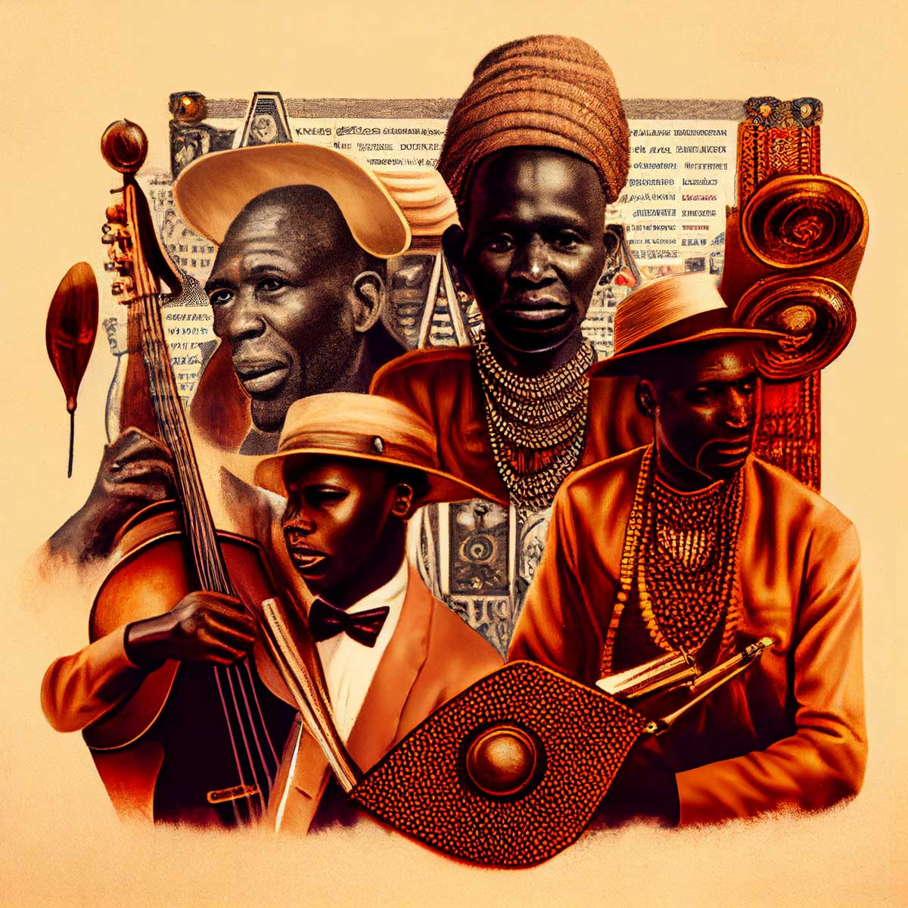

OHN HENDERSON of FORDELL/Travelling in his youth thro several/ parts of Asia and Africa from y/ 1618 to y/ 1628 was/ delivered unto Slavery by a Barbari/ Prince in Zarquebar on the Cost of Africa where Princefs of that/ Countrie falling in love with him/ Even to Renoincing her Religion and/ Countrie contrived the mians of/both their Escape and getting a/board a ship trading up y/ Red/Sea landed cam to Alexandre(a) /where she died whofe Picture/Mr Henderson cauised to take/ with her black Maid after/ their oun Country habett/ from y/ original Picture/at oterston by W. Frier 1731
If I had to choose one word to describe Kenya, it would be ‘diversity’. Kenya is truly a diverse country. Whether philosophically, culturally, or linguistically. With more than 42 tribes, all originating from various parts of the African continent throughout the course of history, every part of Kenya is essentially a unique cultural spot on its own. Because of this diversity, a special intersection of talents feeds into the Kenyan music scene to keep Kenyans and the world at large inspired, educated, and entertained. Music lovers in Kenya can bob their heads to Benga, Hip-hop, Reggae, Afrobeat, Gengetone, Kapuka, Genge, and folk music in over 40 national languages. Kenyan music has come a long way with a rich history that spans decades and encompasses a diverse range of styles and genres. From the measured rhythms of Benga to the urban youth sounds of gengetone, Kenyan music has evolved significantly over the years, reflecting the changing tastes and cultural influences of the country’s young and vibrant population. In this post, we take a closer look at the different styles of Kenyan music, exploring their origins, key characteristics, and notable artists. Along the way, we also delve into the social and cultural contexts that have shaped the evolution of these styles, offering insight into the unique sounds and influences that have contributed to the growth and popularity of Kenyan music around the world. Whether you’re a fan of Benga, Afrobeat, Folk Music, Taarab, or the more contemporary sounds of Gengetone, this guide will give you a better understanding of the diverse range of styles that make up Kenyan music and the cultural forces that have shaped their development.
Ngabonziza Bonfils (b. 1989) is a self-taught Rwandan artist specializing in murals and children’s book illustrations. He began drawing from a young age and pursued his creativity despite the arts being very unfamiliar within his family. Upon completing his education with a focus in Construction, he decided to follow his passion for the arts from 2010 and began painting from local arts studios. By 2013 Ngabonziza began exploring the world of public art and started creating community-based murals across Rwanda in partnership with local organization Kurema, Kureba, Kwiga. In 2014 Ngabonziza worked as an illustrator on the “Know Zone Rwanda” educational television series for children. Throughout 2014 and 2015, he successfully led the design and development of many large-scale pieces and has subsequently been building a portfolio of murals including commissioned works at restaurants, schools, community centers and more. He has actively produced and exhibited works for galleries and events across Kigali, including: My Democracy; exhibition of the Embassy of the United States of America in Rwanda; 2014 Celebration of Martin Luther King Event at the US Ambassador’s Residence; 2014 Metamorphosis; 4 person group show at Ivuka Arts Kigali, featuring a series of Ngabonziza’s murals addressing the lives and rights of street children; November 2015 One Voice; featured artist in large group show examining issues of gender based violence, supported by the Embassy of the United States of America in Rwanda; December 2015 More of Ngabonziza’s work can be seen online: www.facebook.com/nbonfils1/ The artist can be contacted through: ngaboarts05@gmail.com or +250 782 026 687